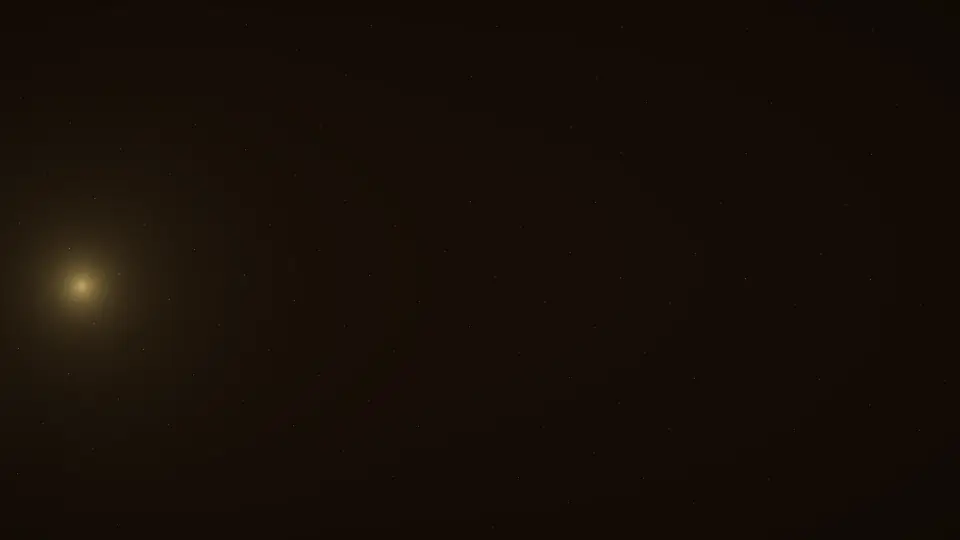
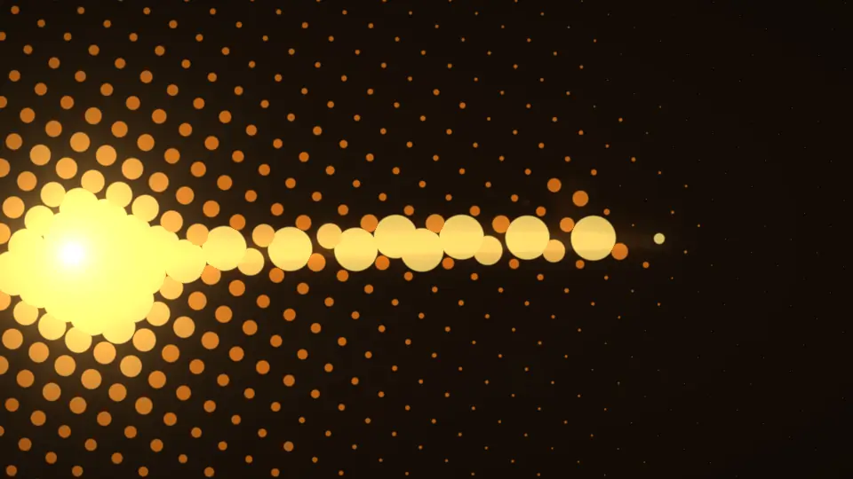
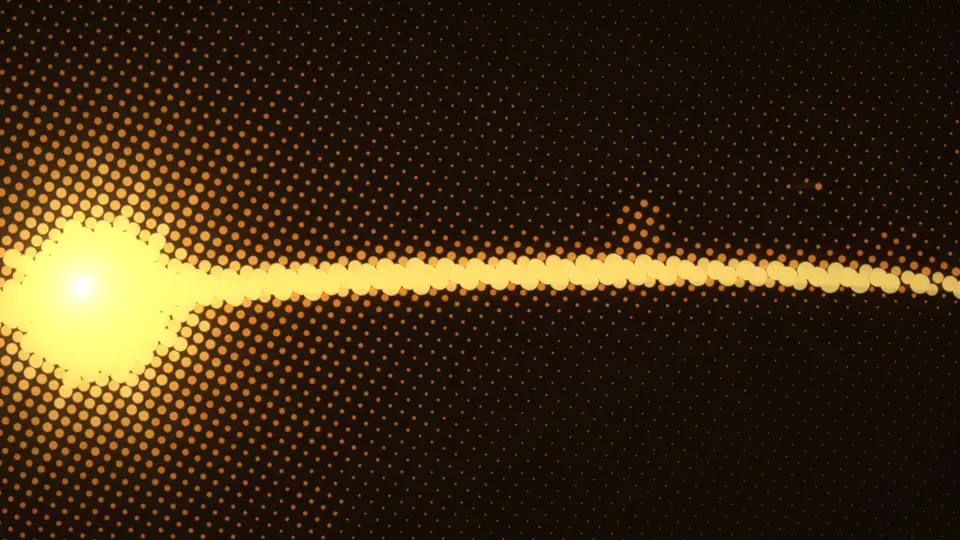
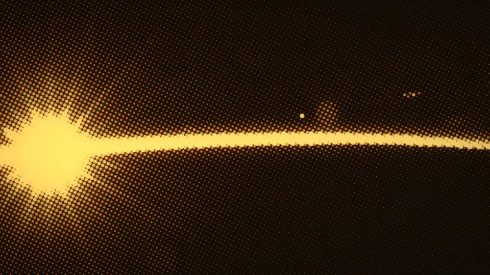
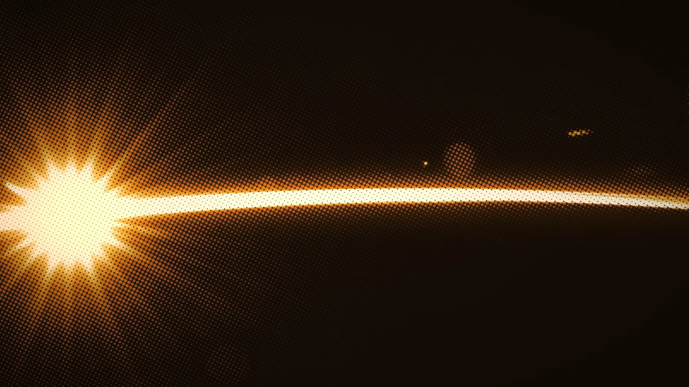
Asset kit 53 for Albretsen AS. A title sequence that resolves into a page, printed in two inks, lit by the real sun over Oslo.
The page opens like a film: darkness, one point of light on a horizon, then a field of dots pulls focus until a photograph resolves. Everything after is printed in two warm inks, like a duotone plate pulled at golden hour. The inks change with the real sun over Oslo, so the site is never quite the same twice.
Technology with the patience of an observatory and the timing of a title sequence.
The mark is the whole brand in one glyph: a solid half-sun (the work that is done and shipped) over a tapering dot screen (its reflection, the print). The wordmark is Instrument Serif, outlined; the company suffix is set small in Geist Mono.
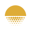
mark.svg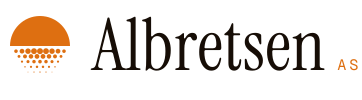
lockup-ink.svg (daylight)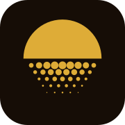
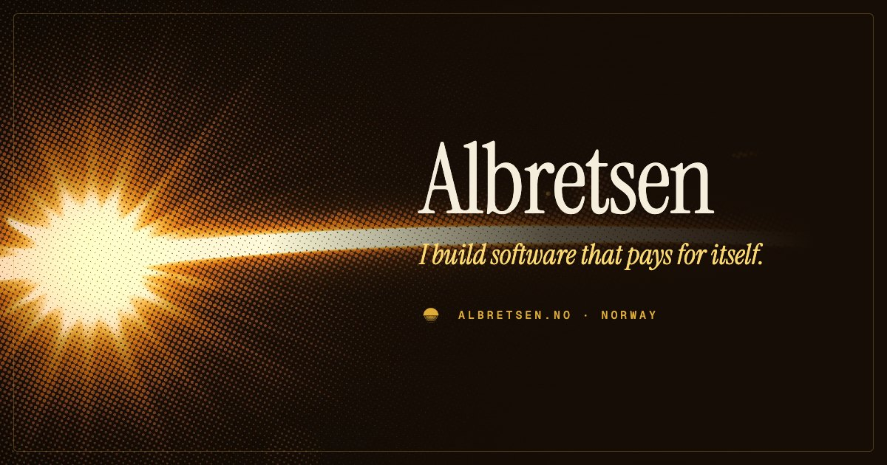
og.jpg · 1200 × 630Eight inks in OKLCH, seeded at hue 84 (ochre). The page is umber by night and vellum by day; dots always run from a low ink to a high ink. Below the swatches: the four duotone pairs the time-of-day system switches between.
Instrument Serif (OFL) for titles and figures: condensed, high-contrast, cinematic. Geist (OFL) for reading. Geist Mono, wide-tracked caps, for credits, labels and the time stamp.
Albretsen AS is a small technology company in Norway that builds apps, SaaS and agent infrastructure, and takes one outside engagement at a time.
Baked duotone halftones (webp, 1x and 2x) that double as the poster frame under the live shader and the fallback without WebGL. Sources: NASA ISS photography and a CC0 aurora over Lofoten. Below: the intro sequence, baked from the shader at four moments.
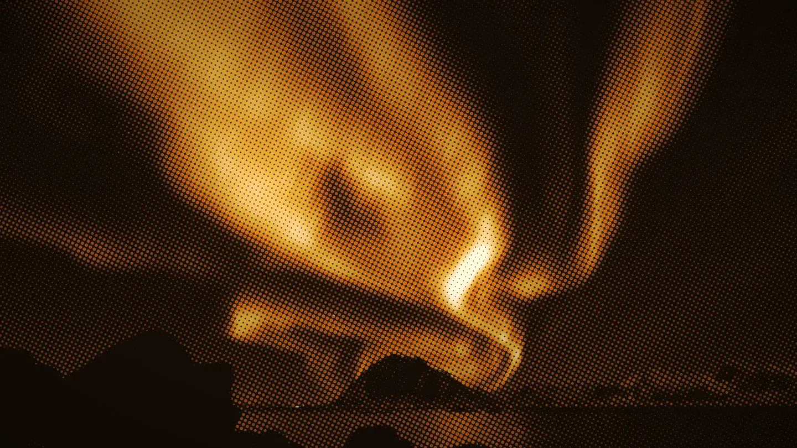
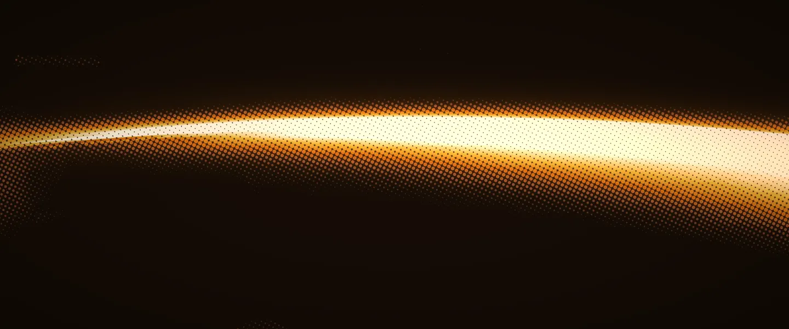




Film-poster framing around the real product logos (untouched, from designs/_shared/products), each set against a Trouvelot astronomical plate printed in the house inks. Hover for the glint. Retired products become moons, waning with age; Luma keeps its real logo.
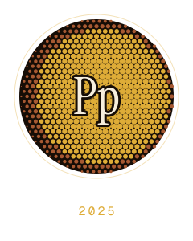
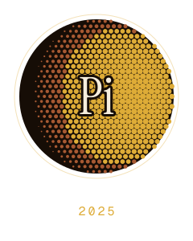
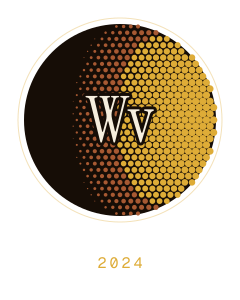
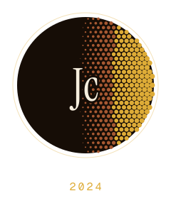
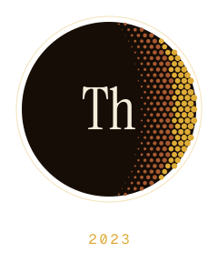
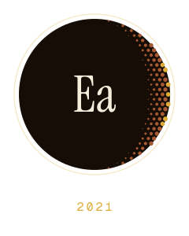
Trouvelot's 1872 to 1881 drawings, reprinted as halftones. Haeckel's diatoms (1904) cut free as floating specimens. A real sun-path figure for Oslo. Two rotating seals. Use them sparingly, one per section.
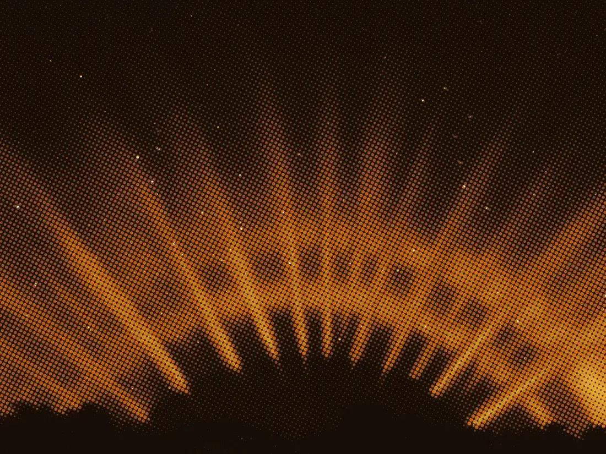
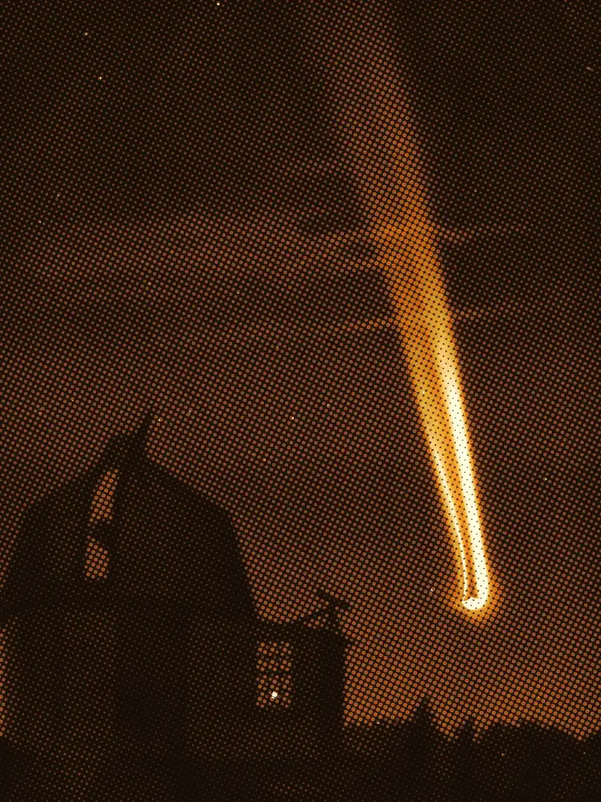
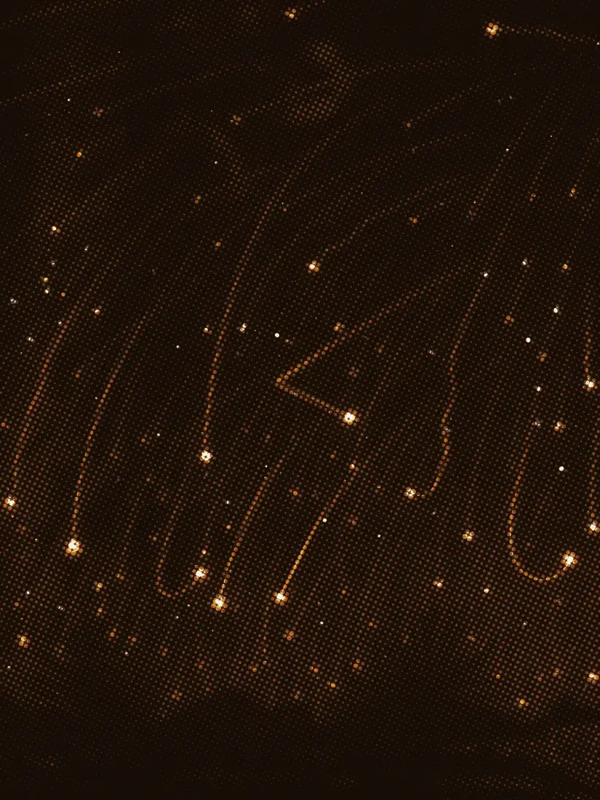
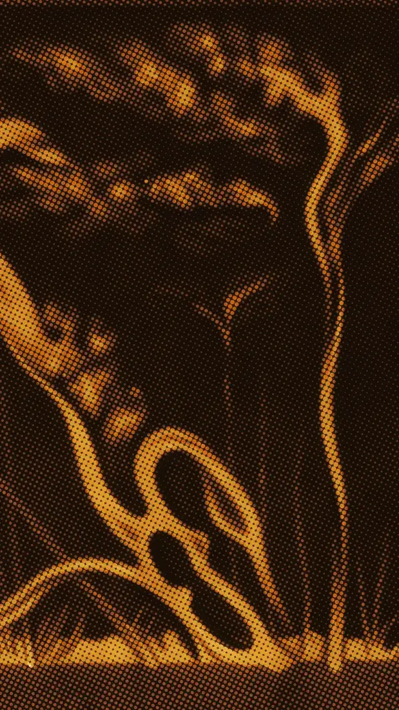
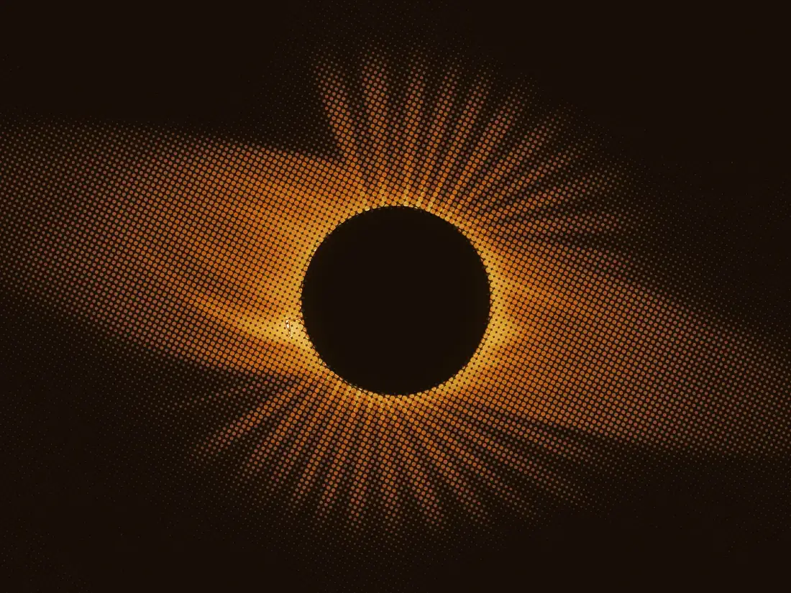
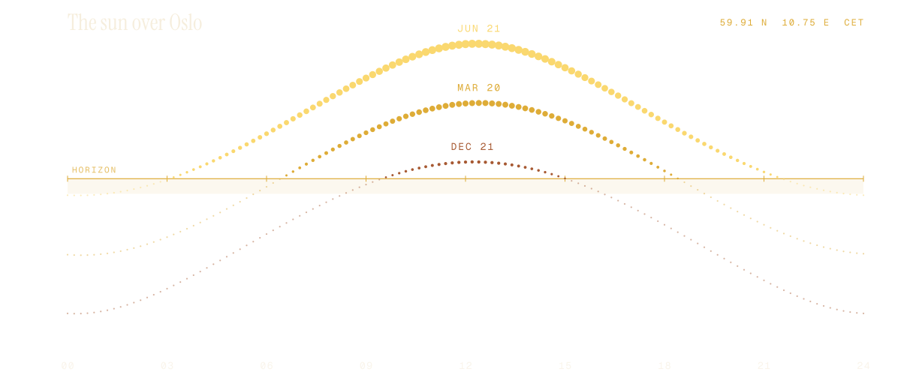
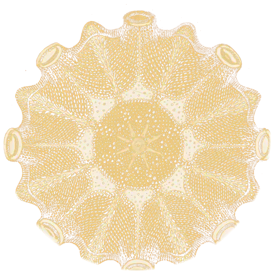
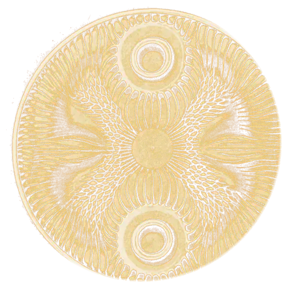
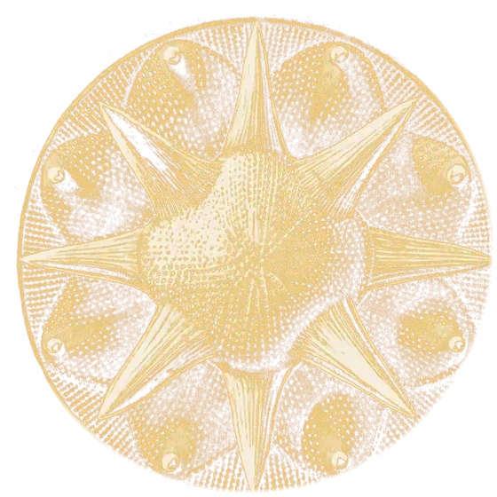
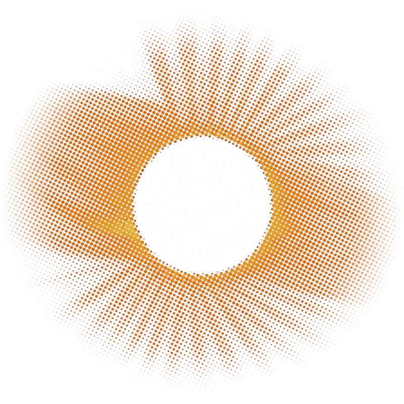
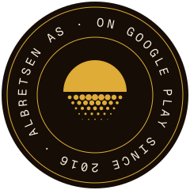
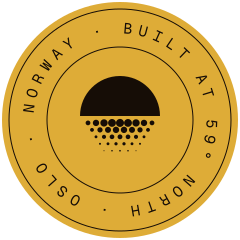
motion.css + motion.js. Each is named after what a projectionist would call it. All collapse to instant under prefers-reduced-motion.
Frame opens from a slit while the print surfaces over-exposed and soft, then contrast arrives.
Title letters arrive wide-tracked and out of focus, then rack in tight.
A halftone screen prints under the pointer, dots fading out from its centre.
Hover the plateBars close to a hairline, open to 2.39:1, then to full frame. Runs on the whole window.
Sub-pixel drift and flicker, the way projected film never sits still. Stills only.
motion/mark-sunrise.json: spark, horizon, the sun rises, its reflection prints dot by dot, then breathes. Markers: intro, loop.
js/halflight.js is the centrepiece: raw WebGL, no library, about 11 KB. The opening of this page is it running. Demos: intro.html (the full cinematic opening), shader.html (plates, phases, replay, ?freeze=0.3 for stills), lottie.html.